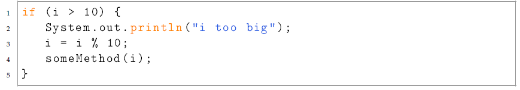

Coding Style
Einführung in die objektorientierte Programmierung mit Java, WS1718 - Alexander Bazo, Florin Schwappach 10. Oktober 2017
Dieser Text stammt aus einem Handout für den Kurs CS106A der Universität Stanford: http://web.stanford.edu/class/archive/cs/cs108/cs108.1082/
106a-java-handouts/HO30CodingStyle.pdf
Most of this handout was written by Nick Parlante
When writing a paper, you can have well-crafted, correctly spelled sentences and create “A“ work. Or you can hack out the text in a hurry. It will not look as good, but it can convey your thoughts and get the job done; it’s worth maybe a “B“ or a “C“. Computer code is not like that. Code that is messy tends to have all sorts of bugs and other problems. Messy code attracts problems like a half-eaten lollipop attracts lint. The problems and bugs in poorly written code tend to compound each other and pile up, so the code ends up nearly worthless. It has bugs. Nobody knows how to fix them or add features without creating more bugs. Once code is in that state, it is hard to escape. In a sense, code tends to be more either “A“, or “D“ or “F“. Therefore, it is best to write code that is clean to start, and keep it clean as you add features. This is one of the lessons in CS for successfully building large projects. For that reason CS 106A emphasizes the habits of clean, well-engineered code right from the start, building the right habits for the future.
One reason to write clean, well-structured code is that it works better and takes less time in the end. The other reason to write clean code is that it is just more satisfying to do a good job on something. Clear, elegant code feels right, just like any other engineering or artistic creation. Doing it right the first time is better for your engineering soul.
The messy code trap
It is a basic fact of computer science that poorly designed, messy code is harder to build and debug than clean code. It is tempting to just type out a quick solution as it occurs to you to get started. It is better to take a little more time at the start to build the clean version, creating fewer headaches in the debugging phase. Once code gets messy, it’s hard to clean it up. It’s easier to start clean, and then keep it clean with each addition. The worst possible strategy is to build the messy version, do your debugging on that, and then clean it up before turning it in—all the work and little of the benefit! Do it the right way from the start, and you’ll be happier.
Readable
One metric for good code is that it “reads? nicely—that someone sweeping their eye over the code can see the algorithmic idea at hand. The original programmer had an idea in mind—a way to solve the problem. Does the code communicate that idea? Writing readable code is important both because it will help any future reader and because it helps you avoid your own bugs. Bugs, after all, are simply where the code expresses an idea, but it is not the idea you had in mind. Readable code has fewer bugs.
Variable names
The first step in readable code is choosing good names for variables. Typically a variable gets a noun name that reflects what it stores—width or url or parent. If you have the number 2, but do not know anything about it, then the generic num is an okay name. If you know more specifically that it’s a weight or a number of pixels then the name should reflect that knowledge. In Java, the convention is to begin variables with the first word lowercase, and uppercase later words like this: bestScore, remainingCreamPuffs. If you have a pointer to an object but without any more specific word to use for its variable name, then you can use the name of the class in lowercase. So if code deals with a Circle or Person object, then obvious variable names are circle or person. If you know something more specific about the objects, then more specific names like leftCircle or mother are better. There are a few idiomatic one-letter names—i, j, k for int loop counters; x, y, z for coordinates. These are in such wide use that they make very readable code just by familiarity.
Method names
If variables names are the nouns, method names are the verbs. Method names should reflect the action they perform—removeAll(), drawLine(), getX(). The prefixes get and set have a typical role. A get method gets a piece of information from an object, either a value that the object stores or computes: getWidth(), getNumChildren(). Likewise, set methods typically are used to pass a value in to an object for it to store or use: setWidth(int width). Methods that return a boolean are often named starting with is or has.
Whitespace
Use whitespace to help separate the logical parts of the code, in much the same way that paragraphs separate groups of sentences. Rather than write a block of 20 lines, it’s nice to put in blank lines to separate the code into its natural 6-line sections that accomplish logical sub-parts of the computation. Each little section of code might have a comment to describe what it accomplishes. Likewise, you can use whitespace to show the logical grouping of elements within a line. Do not run everything together with no spaces. Here are a few examples
Indentation
All programming languages use indentation to show which parts of the code are owned or controlled by other parts. In CS 106A, whenever there is a {, the code on the next line should be indented—this applies to methods, classes, if-statements, loops, and so on. Eclipse will do this automatically. Hit the tab key to indent one level manually. You can also select a few lines and use tab to move them all right on level, and shift-tab to move them all left one level. At the end of the indented code the matching } should not be indented. In this way, the indented section is visually set-off from the outer { } that controls it, as shown:
Comments
Comments add the human context to the raw lines of code. They explain the overall flow and strategy of what is going on. Comments point out assumptions or issues that affect a part of the program that are not obvious from the code itself. As you write larger and more complex pieces of code, comments help you keep track of your own assumptions and ideas, as you scroll around, building and testing various parts of the code. There gets to be more than you can keep in your head at one time. The first step is good variable and method names. They make the code “read“ well on its own, so fewer comments are required.
Class comments
Each class should have a comment summarizing what it does. Typically the class comment will mention what sort of data the class encapsulates and what sort of methods it implements. Professional quality documentation for a class or group of classes intended for use by others, such as the String class, will also have a few introductory paragraphs of discussion of what sort of problems the class solves and what typical client use of the class looks like. For a system of classes, there may be an architectural overview that summarizes the role of each class and how they all fit together to build the program.
Variable comments
Sometimes the meaning of an instance variable or local variable is completely clear just from its name. For a complex variable, there is often extra contextual information about the variable that the code must be consistent about. A comment where the instance variable is declared is the perfect place to document such side-issues for the variable: what are its units? Are there constraints on what values it is allowed to take on? For example, weight might be the perfect name for an instance variable indicating the weight of the object, but you still need to know, say for a car simulator, that it is in pounds, or that the weight is for the car but does not include the passengers or fuel. There is often ancillary information about an instance variable—its meaning, assumptions, and constraints—beyond what is captured in its name. The comment for an instance variable can capture this extra information about the variable in one place.
Method comments
Method comments should describe what the method accomplishes. Emphasize what the method does for the caller, not how it is implemented. The comment should describe what the method does to the receiver object, adding in the role of any parameters. In the standard comment style used with javadoc, the method comment begin with a verb in the third-person singular form (typically ending in “s“) describing what the method does. For a complex method, the comment can address the preconditions that should be true before the method is called, and the postconditions that will be true after it is done.